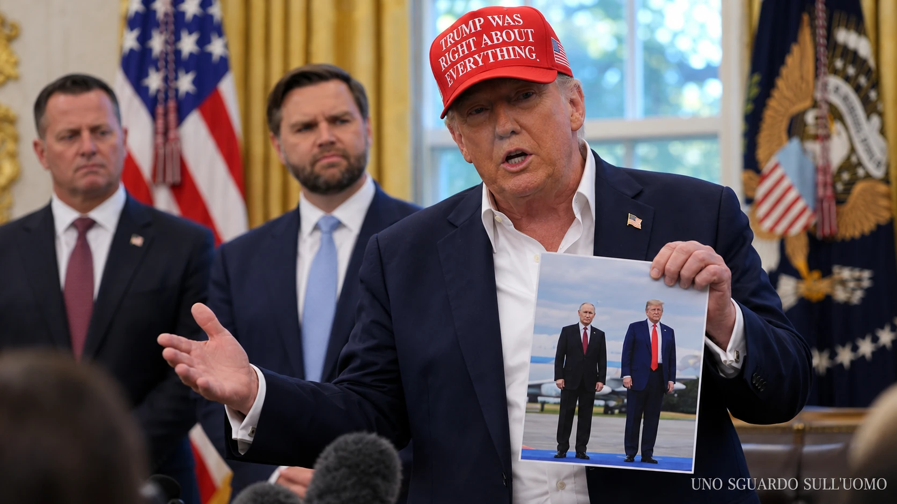

Trump e Putin sono il filo narrativo, non il confine dell'indagine. I loro quarant'anni in parallelo permettono di osservare come decisioni elaborate da presidenti, consiglieri, apparati e operatori economici producano conseguenze che il pubblico vede soltanto quando diventano annunci, prezzi, sanzioni, rotte commerciali o pressioni sulla guerra.
In questo dossier
- Il punto di partenza
- Le due traiettorie prima degli incontri presidenziali
- Dal mercato russo alla campagna americana
- La presidenza e la confidenza trasformata in potere
- La promessa di chiudere la guerra in ventiquattro ore
- Gli aiuti a Kyiv come leva negoziale
- L accordo Trump Putin sul diesel
- Quello che vedono in molti e quello che vedono in pochi
- Gli scenari aperti dall accordo sul diesel
- Il diesel e la geografia invisibile del mercato
- Le raffinerie russe e il prezzo chiesto all Ucraina
- La telefonata non governa da sola il mondo
- Golfo Asia e pressione sull Iran
- Europa Italia e il paradosso della rotta americana
- Le reti private che sopravvivono ai mandati
- Dalle due traiettorie alle conseguenze
- Fonti
Il punto di partenza
Il vero oggetto di questo dossier non sono soltanto Donald Trump e Vladimir Putin. Sono le conseguenze delle scelte preparate ai livelli in cui politica, sicurezza, energia e finanza si incontrano. Le due biografie servono a ricostruire continuità, familiarità e canali di accesso che possono incidere sul modo in cui quelle scelte vengono formulate, negoziate e presentate. Il punto non è dimostrare che un uomo comandi l'altro, ma capire quali interessi vengano favoriti, quali costi siano trasferiti altrove e chi partecipi davvero alla costruzione del nuovo equilibrio.
Questo dossier non sostiene che Donald Trump sia subordinato a Vladimir Putin, che lavori alle sue dipendenze o che ogni decisione americana derivi da un ordine del Cremlino. I fatti disponibili non autorizzano una simile conclusione. Mostrano però una continuità più difficile da liquidare: per quasi quaranta anni la traiettoria economica e politica di Trump ha incontrato più volte la Russia, mentre la traiettoria di Putin trasformava l'apparato sovietico, il potere statale e l'energia in strumenti di influenza. Gli incontri non provano da soli un disegno unitario. La loro ripetizione rende legittimo esaminarne soprattutto gli effetti su Ucraina, mercati energetici, Europa e rapporti con Asia e Medio Oriente.
La gente comune conosce soprattutto dichiarazioni, conferenze stampa e telefonate annunciate. Le decisioni che producono quelle immagini sono preparate da consiglieri, diplomatici, funzionari della sicurezza, esperti di energia, imprese, banche, intermediari e governi alleati. Una telefonata tra presidenti può essere il momento in cui un accordo diventa pubblico, non quello in cui nasce. Questa distinzione è centrale nell'ottobre 2026, quando l'intesa sul diesel russo compare dopo settimane di consultazioni su scorte, raffinerie, sanzioni e guerra.
Il metodo seguito è semplice. Un fatto documentato resta un fatto. Una coincidenza di calendario può sostenere una domanda, ma non diventa automaticamente una prova di coordinamento. Una conseguenza economica osservabile non dimostra da sola l'intenzione politica di chi l'ha prodotta. Gli scenari su Europa, Italia, Cina e Iran vengono quindi presentati per ciò che sono: sviluppi plausibili da controllare attraverso contratti, rotte navali, dati doganali e decisioni pubbliche.
Le due traiettorie prima degli incontri presidenziali
Nel 1987 Trump è un imprenditore immobiliare di quarantuno anni che vende edifici e, sempre più, il proprio nome. Putin ha trentacinque anni e lavora per il Comitato per la sicurezza dello Stato sovietico (KGB) a Dresda nella Repubblica Democratica Tedesca. Trump guarda a Mosca come possibile mercato per un albergo di lusso. Putin osserva dall'interno il sistema che pochi anni dopo si dissolverà. Il primo cerca accesso a un mercato ancora chiuso; il secondo costruisce la propria carriera dentro un apparato che considera l'informazione e le relazioni strumenti di potere.
Dopo il crollo dell'Unione Sovietica, le strade restano separate. Trump attraversa espansioni, debiti, casinò, licenze del marchio e programmi televisivi. Putin torna a Leningrado, poi San Pietroburgo, lavora con Anatolij Sobcak, si trasferisce a Mosca nel 1996, dirige il Servizio federale di sicurezza (FSB) nel 1998, diventa primo ministro nel 1999 e presidente ad interim alla fine dello stesso anno. Dal 2000 consolida un sistema nel quale grandi ricchezze private, apparati di sicurezza e potere politico convivono in prossimità del Cremlino.
Questa asimmetria conta. Non stiamo confrontando due uomini che percorrono carriere uguali. Trump trasforma la notorietà economica in capitale politico. Putin trasforma una carriera statale e di sicurezza nel controllo duraturo della Federazione Russa. Il parallelismo nasce perché entrambi imparano a personalizzare il potere e perché, nel tempo, i mercati e le scelte pubbliche portano le loro traiettorie a incrociarsi.
| Periodo | Donald Trump | Vladimir Putin |
|---|---|---|
| 1987 | Visita Mosca e valuta un albergo. Contesta il costo americano della difesa degli alleati. | Opera nel KGB a Dresda nella Germania orientale. |
| 1990 1999 | Sviluppa il marchio, affronta crisi finanziarie e amplia la propria esposizione pubblica. | Passa dal municipio di San Pietroburgo al Cremlino, al FSB e alla guida del governo. |
| 2000 2008 | Compra e rivende Maison de L'Amitie a Dmitry Rybolovlev con una forte differenza di prezzo. | Consolida la presidenza russa e il rapporto tra Stato, apparati e grandi patrimoni. |
| 2015 2016 | Tratta Trump Tower Moscow mentre corre per la Casa Bianca. La campagna incontra più interlocutori russi. | La Russia interviene nelle elezioni americane attraverso operazioni documentate dagli apparati statunitensi. |
| 2017 2020 | Da presidente privilegia colloqui diretti e spesso poco documentati con Putin. | Usa il rapporto con Washington per cercare riconoscimento, spazio negoziale e alleggerimento della pressione occidentale. |
| 2022 | Definisce geniale e molto scaltra la mossa di Putin alla vigilia dell'invasione su larga scala. | Riconosce le entità separatiste e ordina l'invasione dell'Ucraina. |
| 2024 2026 | Presenta la propria familiarità con Putin come capacità di chiudere la guerra e usa aiuti, intelligence e commercio come leve. | Cerca concessioni politiche, protezione della capacità industriale russa e nuovi sbocchi per il diesel. |
Dal mercato russo alla campagna americana
Il viaggio del 1987 non produce l'albergo immaginato. Produce però un precedente: Trump considera l'Unione Sovietica, ancora avversaria strategica degli Stati Uniti, come uno spazio nel quale un rapporto personale e un marchio americano possono aprire un affare. Nello stesso anno acquista inserzioni sui grandi quotidiani statunitensi per contestare il costo della protezione garantita agli alleati. Non esiste una prova che quella posizione gli sia stata dettata da Mosca. Esiste una continuità di linguaggio: alleanze valutate come conti economici e avversari trattati come possibili interlocutori commerciali.
Tra il 2004 e il 2008 la proprietà di Palm Beach chiamata Maison de L'Amitie passa da un acquisto di circa 41 milioni di dollari a una vendita per 95 milioni al miliardario russo Dmitry Rybolovlev. La differenza è notevole, ma non costituisce da sola la prova di un trasferimento occulto. Servirebbero valutazioni indipendenti, costi dei lavori, condizioni di mercato e atti completi. Il dato solido è più limitato e ugualmente rilevante: grandi patrimoni russi entrano nella storia economica di un imprenditore che diventerà presidente degli Stati Uniti.
Nel 2015 e nel 2016 l'intersezione diventa più delicata. La Trump Organization continua a discutere un possibile grattacielo a Mosca mentre Trump chiede agli elettori la presidenza. Michael Cohen ammetterà di avere fornito al Congresso una versione falsa sulla durata dei negoziati. Nel giugno 2016 Donald Trump Jr., Paul Manafort e Jared Kushner partecipano a un incontro organizzato dopo l'offerta di materiale dannoso per Hillary Clinton, presentato come parte del sostegno russo a Trump. Sono episodi distinti e non vanno fusi in un patto immaginario.
Il rapporto del procuratore speciale Robert Mueller documenta l'interferenza russa e numerosi contatti, ma non stabilisce una cospirazione penalmente provata tra la campagna e il governo russo. Il rapporto bipartisan del Senato esamina rischi di controspionaggio, compresi i rapporti tra Manafort e Konstantin Kilimnik e la condivisione di informazioni elettorali. La conclusione corretta non è scegliere tra innocenza assoluta e complotto totale. È riconoscere che interessi immobiliari, accessi politici e operazioni russe erano presenti nello stesso periodo.
La presidenza e la confidenza trasformata in potere
Quando Trump entra alla Casa Bianca, una relazione personale con Putin smette di riguardare soltanto due uomini. Ad Amburgo nel 2017 e a Helsinki nel 2018, i colloqui diretti producono un problema istituzionale: quanto sanno il Dipartimento di Stato, il Consiglio di sicurezza nazionale e gli altri funzionari chiamati a eseguire decisioni nate in quelle stanze? Il Washington Post riferisce che, dopo un incontro ad Amburgo, Trump prese le note della propria interprete e le chiese di non discuterne con altri funzionari. Il contenuto integrale dei colloqui resta in gran parte fuori dal normale circuito diplomatico americano.
A Helsinki il contrasto diventa pubblico. Putin dichiara che avrebbe preferito la vittoria di Trump nel 2016. Trump tratta con scetticismo, davanti alle telecamere, il giudizio dei propri apparati sulle interferenze russe e tenta poi di correggere le parole pronunciate. Non serve immaginare ciò che pensa in privato. Il fatto politico è visibile: il presidente americano espone una distanza tra la propria valutazione personale di Putin e quella delle istituzioni di sicurezza del suo Paese.
Nel 2019 la sospensione di parte dell'assistenza militare destinata all'Ucraina conduce al primo impeachment. Nel gennaio 2020 il Government Accountability Office conclude che l'Office of Management and Budget aveva trattenuto fondi per ragioni politiche non consentite dall'Impoundment Control Act. Il Senato assolve Trump nel processo politico. Nello stesso anno Trump concede provvedimenti di clemenza a Roger Stone, Michael Flynn, George Papadopoulos e Paul Manafort, protagonisti di vicende diverse emerse nel quadro dell'indagine russa. Ogni atto rientra nei poteri presidenziali; il loro insieme resta politicamente significativo.
Il 22 febbraio 2022 Trump definisce geniale e molto scaltra la decisione con cui Putin riconosce le entità separatiste dell'Ucraina orientale e presenta l'ingresso delle truppe russe come operazione di pace. Nello stesso intervento sostiene che l'evento non sarebbe accaduto durante la propria presidenza e richiama la conoscenza personale di Putin. Due giorni dopo comincia l'invasione su larga scala. La cronologia impedisce di attribuirgli l'approvazione di ogni fase successiva, ma conserva un dato: davanti a un atto di forza russo, Trump mette in primo piano l'abilità tattica di Putin.
La promessa di chiudere la guerra in ventiquattro ore
Durante la campagna del 2023 e del 2024 Trump promette ripetutamente di chiudere la guerra in ventiquattro ore o prima ancora di entrare in carica. Nel dibattito presidenziale del settembre 2024 spiega il proprio vantaggio in termini personali: conosce bene Zelensky, conosce bene Putin, ha con loro un rapporto che ritiene rispettato. La promessa non è soltanto una proposta di politica estera. È la presentazione della familiarità personale come strumento di governo.

L'immagine riassume questa comunicazione senza dimostrare ciò che suggerisce. Putin non è presente nella stanza: viene introdotto da Trump attraverso una fotografia. L'oggetto mostrato diventa una prova simbolica di accesso, quasi una credenziale diplomatica. I rappresentanti istituzionali sullo sfondo assistono alla trasformazione di una relazione rivendicata in argomento politico. Il lettore può vedervi sicurezza, vanità, tattica negoziale o un grado di confidenza che merita attenzione.
La guerra non si chiude in ventiquattro ore. Nel 2025 Trump ammette di avere creduto che il conflitto sarebbe stato più facile da risolvere proprio perché conosce Putin. Questo scarto tra promessa e risultato non cancella la pretesa iniziale; la rende più rivelatrice. Trump era convinto che il rapporto personale potesse produrre un esito istituzionale. La domanda diventa allora se il tentativo di far ragionare Putin abbia cambiato le richieste di Mosca oppure abbia spostato una parte crescente della pressione su Kyiv.
Gli aiuti a Kyiv come leva negoziale
Nel febbraio 2024 Trump racconta di avere avvertito un alleato dell'Organizzazione del Trattato dell'Atlantico del Nord (NATO) che non lo avrebbe protetto se giudicato inadempiente e che avrebbe incoraggiato la Russia ad agire. La frase riprende un criterio visibile già nel 1987: l'alleanza come prestazione subordinata al pagamento. Nel febbraio 2025 gli Stati Uniti votano contro una risoluzione dell'Assemblea generale delle Nazioni Unite sostenuta dall'Ucraina e da molti Paesi europei, insieme alla Russia. Nel marzo successivo sospendono temporaneamente assistenza militare e condivisione di intelligence con Kyiv, per poi riprenderle dopo i colloqui in Arabia Saudita.
Queste scelte non dimostrano che Washington esegua una volontà russa. Dimostrano qualcosa di più concreto: il sostegno americano può essere ritirato o condizionato per modificare il comportamento dell'alleato che dipende da armi e informazioni. La forza contrattuale non è simmetrica. Washington sceglie tempi e condizioni; Kyiv difende il proprio territorio mentre negozia.
Il vertice dell'agosto 2025 in Alaska non produce un cessate il fuoco. L'amministrazione americana privilegia poi l'idea di un accordo complessivo rispetto a una tregua preliminare. La differenza è materiale: se la guerra continua durante il negoziato, ciascuna parte conserva la possibilità di cambiare il terreno con nuove offensive e nuovi bombardamenti. Il tempo diplomatico di Washington e Mosca non coincide con quello di chi vive sotto attacco.
L accordo Trump Putin sul diesel
Il 9 ottobre 2026 Trump annuncia, dopo una telefonata con Putin, un accordo per riaprire il commercio del diesel di origine russa. Nello stesso giorno l'Office of Foreign Assets Control del Tesoro americano pubblica la General License 135. Il provvedimento autorizza fino al 7 aprile 2027 transazioni relative alla vendita, alla consegna, allo scarico e all'importazione del prodotto, compresa l'importazione negli Stati Uniti. Non è una generica dichiarazione di amicizia: è l'atto amministrativo che rende possibili operazioni prima ostacolate dalle sanzioni americane.
Nella comunicazione pubblica compare una prima tranche superiore a 300 mila tonnellate. Vengono inoltre prospettate quantità successive di 500 mila tonnellate, un milione e fino a tre milioni ulteriori, subordinate alla capacità di consegna. Il totale teorico raggiungerebbe circa 4,8 milioni di tonnellate, equivalenti in via indicativa a circa 35,8 milioni di barili. Ma una quantità annunciata non è una quantità consegnata. Licenza, impegno politico, contratto, disponibilità in raffineria, caricamento della nave, assicurazione, pagamento e arrivo sono passaggi differenti. Il valore dell'accordo comincia prima dell'ultima consegna, perché restituisce a Mosca la possibilità di cercare compratori e modifica le aspettative del mercato.
L'accordo non dice che tutto il diesel debba attraversare l'Atlantico. Un operatore americano può comprare, finanziare o intermediare un carico e disporne la consegna in un mercato terzo, nei limiti delle norme applicabili. Il prodotto resta di origine russa anche quando cambia proprietario. Questa distinzione è decisiva: l'effetto sugli Stati Uniti può arrivare attraverso una maggiore offerta mondiale, la sostituzione di altri carichi e la riduzione del prezzo marginale, non soltanto attraverso navi scaricate in un porto americano.
Il 2 ottobre e il 9 ottobre non sono due versioni dello stesso provvedimento. Il primo passaggio riguarda l'azione coordinata del Gruppo dei Sette sulle riserve, sulle manutenzioni e sull'utilizzo delle raffinerie. Il secondo riapre uno spazio commerciale al diesel russo. Le due decisioni possono sommarsi negli effetti, ma non nei numeri senza verifiche: una parte dei barili mobilitati dal G7 anticipa impegni già assunti, mentre una parte delle tonnellate russe resta condizionata e futura. Proprio questo scarto fra ciò che viene annunciato e ciò che viene effettivamente movimentato rende necessario seguire l'accordo nel tempo.
Quello che vedono in molti e quello che vedono in pochi
Quello che vedono in molti non è pari a quello che vedono in pochi. La maggioranza osserva la scena conclusiva: Trump parla con Putin, annuncia nuovo diesel e promette un sollievo sui prezzi. Se il costo alla pompa scende, l'accordo può apparire come una scelta pragmatica. Se non scende, può sembrare una promessa mancata. Questa è la parte immediatamente misurabile nella vita quotidiana e quindi quella che domina il giudizio pubblico.
Una cerchia molto più ristretta vede la scena prima che venga inquadrata. Funzionari del Tesoro valutano quali divieti sospendere e quali conti continuare a bloccare. Diplomatici misurano le reazioni di Ucraina, Europa e alleati del G7. Esperti di energia confrontano qualità del prodotto, capacità delle raffinerie, scorte, noli, assicurazioni e porti. Imprese e intermediari verificano se esistono carichi, compratori e sistemi di pagamento. Apparati di sicurezza considerano l'effetto delle entrate russe e della protezione delle raffinerie sulla prosecuzione della guerra.
Questi pochi non formano necessariamente una regia unica e non condividono per forza lo stesso obiettivo. Sono i soggetti che dispongono di informazioni tecniche, negoziali o riservate prima che la decisione diventi un titolo. Possono vedere contropartite che il pubblico conoscerà soltanto più tardi, oppure non conoscerà affatto: una concessione chiesta a Kyiv, una deroga concordata con un alleato, un carico destinato a un Paese terzo, una manutenzione rinviata, una pressione esercitata su un produttore del Golfo.
La telefonata presidenziale può quindi essere l'annuncio di un equilibrio già preparato, non il momento in cui quell'equilibrio nasce. Le consultazioni tra Stati Uniti, europei e ucraini, l'intervento del G7, la visita di Xi Jinping e gli atti del Tesoro appartengono allo stesso arco temporale. Non provano un accordo segreto fra tutti gli attori. Mostrano però che la decisione formalmente bilaterale fra Trump e Putin entra in una rete materialmente multilaterale. Molti vedono due leader e un prezzo; pochi vedono la mappa delle rinunce, delle sostituzioni e dei benefici possibili.
La differenza informativa produce una conseguenza politica. Il vantaggio promesso al consumatore è visibile subito; il costo esterno può emergere dopo mesi e in un altro Paese. Il cittadino non deve desiderare una vittoria russa per preferire carburante meno caro. Può disapprovare Putin e, nello stesso tempo, premiare una decisione che alleggerisce il bilancio familiare. Chi governa sa che il sollievo immediato parla più rapidamente della perdita di capacità militare o negoziale subita da un alleato lontano.
Gli scenari aperti dall accordo sul diesel
L'accordo non apre un solo futuro. Le conseguenze dipendono dai volumi realmente consegnati, dalle destinazioni, dalle risposte europee, dalla continuità degli attacchi alle infrastrutture e dalla capacità degli altri produttori di spostare i propri flussi. Gli scenari principali possono verificarsi separatamente oppure sovrapporsi.
| Scenario | Meccanismo | Conseguenze possibili |
|---|---|---|
| Prezzi e consenso negli Stati Uniti | Più diesel russo raggiunge il mercato mondiale o sostituisce altri carichi, liberando offerta per gli Stati Uniti. | Prezzi marginali e scorte possono migliorare. Se le consegne restano limitate, il beneficio economico può essere inferiore al valore politico dell'annuncio. |
| Entrate e capacità industriale russa | Mosca recupera compratori e riduce il rischio di accumulo del prodotto mentre le raffinerie continuano a operare. | Aumentano gli sbocchi commerciali e la capacità di sostenere entrate, logistica civile e parte dello sforzo bellico. |
| Pressione negoziale sull Ucraina | Washington collega il dialogo economico con Mosca alla richiesta di ridurre gli attacchi ucraini contro le raffinerie russe. | Una tregua formalmente reciproca può proteggere maggiormente la rete produttiva russa se Mosca continua a colpire elettricità e riscaldamento ucraini. |
| Riallocazione fra America ed Europa | Il prodotto russo serve mercati terzi e libera diesel americano o mediorientale già compatibile con le regole europee. | L'Europa può ricevere più offerta e prezzi meno tesi senza importare direttamente diesel russo. |
| Normalizzazione europea | L'Unione europea attenua in futuro alcune restrizioni oppure crea un regime controllato per determinati prodotti. | Carichi russi potrebbero tornare su rotte più corte. Il beneficio sui prezzi avrebbe come contropartita una minore pressione economica su Mosca. |
| Centralità italiana | Porti, depositi, raffinerie, distribuzione ed Eni permettono all'Italia di approvvigionare e ridistribuire prodotti nel Mediterraneo e in Europa. | L'Italia può acquisire peso commerciale e diplomatico, ma soltanto con capacità disponibile, contratti, collegamenti continentali e compatibilità con le sanzioni. |
| Golfo Asia e Iran | La nuova disponibilità di raffinati modifica i fabbisogni americani e può rendere più prodotto del Golfo disponibile per compratori asiatici. | Cina e altri acquirenti hanno un incentivo maggiore a chiedere stabilità delle rotte e a esercitare pressione sull'Iran, senza che ciò provi un piano concordato con Trump e Putin. |
| Effetto limitato e costo politico | Volumi insufficienti, problemi logistici, qualità incompatibili o prezzi già in discesa riducono l'impatto reale dell'accordo. | Gli Stati Uniti possono ottenere poco sui prezzi mentre Mosca conserva il vantaggio politico della riapertura e Kyiv sopporta comunque nuove pressioni. |
Gli scenari non si escludono. È possibile che l'accordo produca un beneficio moderato sui prezzi americani, un vantaggio commerciale più consistente per la Russia e, nello stesso tempo, una pressione aggiuntiva sull'Ucraina. È anche possibile che il diesel russo non entri nell'Unione europea ma contribuisca ugualmente ad abbassarne i prezzi liberando altri carichi. La domanda corretta non è quale scenario sia vero in astratto, ma quali combinazioni comincino a comparire nei dati.
Lo scenario politicamente più delicato è quello in cui il vantaggio visibile per milioni di consumatori resta piccolo ma sufficiente a sostenere la narrazione dell'accordo, mentre il vantaggio meno visibile per Mosca riguarda la riapertura di un mercato, la protezione della capacità produttiva e l'indebolimento della pressione militare ucraina. Il contraddittorio richiede però di misurare anche ciò che gli Stati Uniti ottengono da Putin e quali obblighi effettivi vengono imposti alla Russia.
Per stabilire quale futuro si stia realizzando bisognerà seguire quantità contrattate e consegnate, origine e destinazione dei carichi, prezzi e scorte dei distillati, tassi di utilizzo delle raffinerie, cambi di proprietà, assicurazioni, sanzioni europee, attacchi russi e ucraini alle infrastrutture e concessioni contenute negli eventuali testi negoziali. È questa la parte che pochi possono osservare mentre l'accordo viene costruito e che un dossier deve rendere leggibile a molti.
Il diesel e la geografia invisibile del mercato
Nell'autunno 2026 il rapporto Trump Putin incontra una crisi energetica mondiale. Gli Stati Uniti producono grandi quantità di distillati, categoria che comprende soprattutto gasolio ma anche altri prodotti, e continuano a esportarne volumi consistenti. Per la settimana terminata il 2 ottobre, la Energy Information Administration (EIA) registra 5,290 milioni di barili al giorno di produzione, una domanda indicativa di 3,650 milioni e scorte per circa 105,1 milioni di barili. Le statistiche discusse nel materiale di lavoro indicano anche importazioni ed esportazioni contemporanee.
Non esiste contraddizione nel produrre molto, esportare e soffrire una tensione sulle scorte. Una raffineria della costa del Golfo può avere contratti esteri mentre la costa orientale dipende da rotte differenti. Oleodotti, navi, depositi, qualità dei prodotti e tempi di consegna frammentano il mercato. Nel 2025 le esportazioni americane di distillati verso l'Europa restano più forti che prima del 2022; Paesi Bassi e Regno Unito sono destinazioni importanti. Bloccare quelle esportazioni avrebbe potuto ridurre il prodotto disponibile altrove e spingere ancora più in alto i prezzi internazionali.
Il 2 ottobre 2026 il Gruppo dei Sette (G7) annuncia un rilascio coordinato attraverso l'Agenzia internazionale dell'energia (IEA) di 100 milioni di barili in quattro mesi, con una quota significativa di diesel concentrata nei primi venti giorni. Lo stesso documento chiede di coordinare le manutenzioni delle raffinerie ed evitare restrizioni alle esportazioni tra i membri. La IEA chiarisce poi che una parte importante dell'operazione accelera impegni assunti a marzo: non si possono contare quei barili due volte come se fossero tutti nuovi.
Il 9 ottobre l'Office of Foreign Assets Control (OFAC) del Tesoro americano pubblica la General License 135. La licenza autorizza fino al 7 aprile 2027 transazioni relative alla vendita, consegna, scarico e importazione, compresa l'importazione negli Stati Uniti, di diesel di origine russa. L'atto apre un canale commerciale, ma non stabilisce che ogni tonnellata annunciata arrivi in un porto americano. Una società statunitense può acquistare o intermediare un carico e consegnarlo direttamente in un mercato terzo. La proprietà commerciale non cambia l'origine del prodotto.
Questa distinzione risponde anche al paradosso europeo. Se un carico russo viene comprato da un operatore americano, resta diesel di origine russa. Le sanzioni dell'Unione europea non decadono perché cambia il proprietario della merce. Allo stato delle regole europee, il prodotto russo non può semplicemente essere consegnato nell'Unione attraverso una triangolazione nominale. Può però raggiungere altri compratori e sostituire carichi non russi, liberando navi o prodotti americani e mediorientali per l'Europa. L'effetto sui prezzi europei può quindi essere indiretto senza che il diesel russo entri fisicamente nei porti europei.
Le raffinerie russe e il prezzo chiesto all Ucraina
L'accordo energetico diventa politicamente più grave quando viene letto accanto alla pressione americana sugli attacchi ucraini contro le raffinerie russe. Quelle raffinerie producono carburanti civili, sostengono esportazioni e contribuiscono alla capacità economica e logistica con cui Mosca conduce la guerra. Se Washington riapre un mercato al diesel russo e, nello stesso tempo, chiede a Kyiv di non colpire gli impianti che lo producono, le due decisioni possono rafforzarsi negli effetti anche senza derivare da un unico piano segreto.
La formula raffinerie contro raffinerie sembra reciproca, ma protegge beni diversi. La Russia dispone di una rete estesa di impianti. L'Ucraina ha una capacità di raffinazione più limitata ed è vulnerabile soprattutto negli impianti elettrici, nelle sottostazioni e nel riscaldamento. Zelensky propone perciò un'altra simmetria: l'Ucraina ferma gli attacchi alle raffinerie russe se Mosca interrompe quelli contro le infrastrutture energetiche ucraine. Il punto non è usare le stesse parole per entrambe le parti, ma proteggere vulnerabilità comparabili.
Il vero contraddittorio si trova qui. La lettura critica perderebbe forza se gli Stati Uniti imponessero a Mosca condizioni efficaci, verificabili e sostanzialmente equivalenti a quelle richieste a Kyiv. Fino a quando il testo completo e vincolante di una tregua non è disponibile, si può documentare la convergenza degli effetti a favore della capacità produttiva russa; non si può dichiarare provata la finalità interna di Washington.
Il cittadino vede un'altra parte della scena. Non legge licenze sanzionatorie né segue le navi. Vede il prezzo alla pompa, la rata del mutuo e il costo della spesa. Se il diesel scende, il beneficio è immediato. La rinuncia militare chiesta a un Paese lontano resta astratta. Il consenso può quindi premiare una decisione economica prima che il suo costo geopolitico diventi visibile. Non significa che il consumatore approvi Putin; significa che il sollievo concreto parla più rapidamente della conseguenza remota.
La telefonata non governa da sola il mondo
La Casa Bianca documenta la visita di Stato di Xi Jinping negli Stati Uniti tra il 23 e il 25 settembre 2026. Pochi giorni dopo arrivano la risposta del G7, i chiarimenti della IEA, la licenza americana sul diesel russo e i colloqui con Ucraina ed europei. Il calendario non dimostra che Trump e Xi abbiano discusso il diesel o che Pechino abbia approvato l'accordo con Mosca. Mostra però che le principali potenze stavano parlando mentre il mercato energetico chiedeva una risposta più ampia di una singola telefonata.
Axios riferisce che, quando Trump annuncia l'accordo con Putin, inviati americani stanno incontrando a Miami la delegazione ucraina e diplomatici di Germania, Francia, Regno Unito, Unione europea e NATO. La novità sulle sanzioni entra quindi in una rete negoziale già attiva. Il pubblico ascolta la dichiarazione del presidente; intorno operano consiglieri, tecnici, tattici, studiosi, funzionari e imprese che devono valutare rotte, pagamenti, disponibilità industriale e reazioni degli alleati.
È plausibile che il processo sia iniziato prima dell'incontro Trump Xi e che la visita di settembre sia stata un passaggio visibile, non il punto d'origine. Per dimostrarlo servirebbero agende, documenti preparatori, incontri tecnici e movimenti commerciali anteriori. La conclusione più prudente è anche la più utile: una decisione formalmente bilaterale può essere materialmente multilaterale perché obbliga molti Paesi ad adattare scorte, sanzioni, rotte e strategie.
Golfo Asia e pressione sull Iran
La riapertura di uno sbocco per il diesel russo può riorganizzare altri flussi. Se il prodotto russo serve mercati terzi, alcune forniture mediorientali o americane possono essere destinate altrove. Se gli Stati Uniti riducono stabilmente una parte degli acquisti di greggio del Golfo, quei volumi possono cercare compratori asiatici. Il passaggio non è automatico: greggio e diesel sono merci diverse, le raffinerie richiedono qualità compatibili e i contratti non si spostano con una telefonata.
Lo scenario diventa geopolitico quando entra l'Iran. Cina e altri grandi compratori asiatici hanno interesse a prezzi prevedibili e rotte sicure. Se una quota maggiore del petrolio del Golfo può alimentare i mercati orientali, l'instabilità intorno all'Iran e allo stretto di Hormuz pesa ancora di più sui loro costi. Pechino può quindi avere un incentivo economico, oltre che strategico, a usare la propria influenza su Teheran. Questo non dimostra che l'accordo Trump Putin sia stato costruito per ottenere una pressione cinese sull'Iran. Descrive una catena di incentivi che può rendere convergenti attori con obiettivi diversi.
La normalizzazione economica mondiale, se arriverà, non sarà il risultato di due presidenti isolati. Richiederà compromessi tra produttori, compratori, Paesi di transito, banche, assicuratori, marine mercantili e apparati di sicurezza. Il denaro non decide da solo, ma modifica il costo di ogni scelta politica. Quando la sicurezza delle rotte diventa essenziale per la crescita, la pressione diplomatica può aumentare prima che venga annunciato un nuovo accordo.
Europa Italia e il paradosso della rotta americana
L'Europa resta il passaggio più incerto perché, nel quadro oggi visibile, non appare come il soggetto che imprime una direzione. Applica sanzioni, sostiene Kyiv, cerca forniture alternative e reagisce alle mosse di Washington e Mosca, ma non lascia ancora riconoscere una strategia energetica e diplomatica unitaria per il possibile dopoguerra. Definirla semplicemente passiva sarebbe eccessivo: governi e istituzioni europee possono condurre interlocuzioni che non sono pubbliche. È però documentabile una condizione frammentata e reattiva, nella quale il continente rischia di diventare il luogo su cui ricadono decisioni elaborate altrove.
Le sanzioni vietano l'importazione di prodotti petroliferi russi e, dal 2026, rafforzano anche il controllo sui prodotti ottenuti in Paesi terzi da greggio russo. Una licenza americana non modifica il diritto europeo. Per tornare a comprare direttamente diesel russo servirebbe una decisione politica dell'Unione. Fino ad allora il continente può beneficiare di prezzi mondiali meno tesi e di maggiori forniture non russe liberate altrove, ma non di una semplice etichetta americana applicata alla merce russa.
Da qui nasce il paradosso. Se l'Europa in futuro allentasse le restrizioni, sarebbe economicamente poco razionale far viaggiare una nave dalla Russia agli Stati Uniti e poi riportarla in Europa. Un operatore americano potrebbe comprare il carico e ordinarne la consegna diretta da un porto russo a un porto europeo, sempre che la legge lo consentisse. La rotta commerciale sarebbe americana; la rotta fisica resterebbe corta. Proprio questa separazione tra proprietario, origine, bandiera, assicuratore e destinazione rende probabile che la realtà sia meno pulita delle mappe semplificate.
Gli Stati Uniti esportano già distillati verso l'Europa. Nel 2025 le forniture al Regno Unito e ai Paesi Bassi sono state particolarmente forti. Se il diesel russo viene venduto in altri mercati, può liberare prodotto americano per l'Atlantico oppure sostituire forniture che altrimenti avrebbero servito l'Europa. Una nave non deve fare il giro inutile dell'oceano perché un trader guadagni dall'operazione. Per ricostruire il flusso reale serviranno dati doganali, documenti di carico, cambi di proprietà, assicurazioni e tracciamento navale.
In questo quadro l'Italia possiede un vantaggio potenziale. Eni opera in 62 Paesi ed è presente lungo la catena che va dall'estrazione al trading, dalla raffinazione allo stoccaggio e alla vendita. Enilive dispone di una rete europea di 5.294 stazioni; nel 2025 Eni registra 24,94 milioni di tonnellate di greggio lavorato e 7,81 milioni di tonnellate di vendite retail di prodotti petroliferi in Europa. L'Italia aggiunge porti, depositi, raffinerie e una posizione al centro del Mediterraneo.
Questi dati non fanno automaticamente dell'Italia l'hub europeo. La centralità dipende da capacità effettiva, margini, collegamenti con i mercati continentali, concorrenza di altri operatori e regole dell'Unione. Ma un continente che deve sostituire flussi, mantenere accese le raffinerie e redistribuire carburanti ha bisogno di una rete capillare. L'Italia può diventare più importante proprio perché non offre soltanto un impianto: offre approvvigionamento, lavorazione, depositi, porti e distribuzione.
Una piena centralità italiana sarebbe più probabile se l'Europa trovasse un nuovo rapporto con la Russia, diretto o mediato. Non occorre immaginare un ritorno al sistema precedente al 2022. Anche una normalizzazione parziale, accompagnata da controlli e condizioni politiche, ridisegnerebbe costi e rotte. Il rischio è che l'Europa compri indirettamente ciò che rifiuta direttamente, pagando più passaggi e rendendo meno trasparente l'origine. Il possibile vantaggio è una riduzione della tensione sui prezzi. La scelta non è soltanto economica, perché modifica la pressione esercitata su Mosca durante la guerra.
La domanda europea è quindi politica prima che commerciale: mentre pochi preparano nuovi equilibri energetici, diplomatici e industriali, l'Unione partecipa alla loro costruzione oppure aspetta di conoscerne le conseguenze? Se non definisce condizioni proprie, può trovarsi a finanziare attraverso prezzi e intermediazioni un riavvicinamento deciso da altri, oppure a rinunciare ai possibili vantaggi di una distensione senza riuscire a conservarne la leva politica. L'Italia può occupare uno spazio importante, ma non può sostituire da sola una strategia europea.
Le reti private che sopravvivono ai mandati
Le relazioni tra famiglie, imprenditori e ambienti vicini al potere non sono automaticamente corruzione. Possono però creare accesso, riconoscenza e occasioni che durano più dei governi. Nel 2026 ProPublica documenta che Umar Kremlev, presidente dell'International Boxing Association e figura russa vicina a Putin, ha sostenuto centinaia di migliaia di dollari di spese per festeggiamenti collegati al matrimonio di Donald Trump Jr. e Bettina Anderson. La coppia conferma che Kremlev aveva ospitato due serate di celebrazioni. Kremlev dichiara in seguito di essere stato rimborsato.
Il rimborso riduce ma non chiude ogni domanda contabile. Senza rendiconti completi non è possibile confrontare il valore complessivo di isole, servizi, fuochi d'artificio e organizzazione con la somma restituita, né sapere attraverso quali soggetti sia transitato ogni pagamento. L'assenza di documenti pubblici non prova un illecito. Impedisce semplicemente di verificare se il rimborso coincida con l'intero beneficio economico.
Non esiste una prova che Putin abbia ordinato quelle spese o che il caso abbia determinato la licenza sul diesel. L'episodio racconta qualcosa di diverso: mentre la diplomazia ufficiale cambia con le elezioni, le relazioni personali possono continuare. Quando un presidente attribuisce valore politico alla propria confidenza con Putin, anche gli ambienti familiari vicini a figure del potere russo diventano parte legittima del quadro, purché non vengano trasformati in causalità non dimostrate.
Dalle due traiettorie alle conseguenze
Nel 1987 Trump cercava un albergo a Mosca e Putin lavorava nel KGB a Dresda. Nel 1999 Putin arrivava al vertice dello Stato mentre Trump continuava a costruire il proprio marchio. Nel 2016 un affare immobiliare moscovita restava aperto durante la campagna americana segnata dall'interferenza russa. Nel 2018 i due presidenti si incontravano a Helsinki. Nel 2022 Trump descriveva come geniale una mossa di Putin alla vigilia dell'invasione. Nel 2024 prometteva di chiudere la guerra grazie alla conoscenza personale dei protagonisti. Nel 2026 il diesel russo e le raffinerie entravano nella trattativa.
Questa cronologia non produce la prova che uno comandi l'altro. Produce una domanda più seria. Per quanto Trump possa mostrarsi duro sul piano istituzionale, la sua fiducia nella relazione privata con Putin può creare situazioni ambigue quando coincide con decisioni favorevoli agli interessi russi. Una pressione su Kyiv può nascere dal desiderio americano di fermare la guerra; una licenza sul diesel può nascere dal bisogno di ridurre i prezzi. Gli effetti possono comunque rafforzare Mosca.
Le strade dei due uomini restano autonome, ma non sono lontane come suggerirebbero le sole dichiarazioni ufficiali. Si incontrano nel modo di personalizzare il potere, nella preferenza per il negoziato diretto, nella capacità di trasformare energia e alleanze in leve e nella convinzione che il rapporto tra leader possa superare i vincoli delle istituzioni. È in questa zona che il lettore deve guardare: non alla favola di un padrone e di un sottoposto, ma al confine mobile tra familiarità, interesse nazionale e vantaggio reciproco.
Il rapporto tra Trump e Putin è dunque una lente. Attraverso quella lente emergono decisioni alle quali partecipano presidenti, consiglieri, apparati, governi alleati, imprese energetiche, banche, assicuratori e intermediari. Il pubblico vede l'ultima scena: una telefonata, una fotografia, una promessa sui prezzi. Una cerchia ristretta vede prima i margini negoziali, le deroghe, i contratti, le rotte e le rinunce richieste agli alleati. Rendere leggibile questa distanza non significa inventare una regia segreta; significa seguire il processo prima che venga ridotto a una dichiarazione.
Il risultato non dipenderà soltanto da Trump e Putin. Europa, Cina, Paesi del Golfo, Iran, Ucraina, imprese energetiche e apparati statali decideranno se il nuovo equilibrio abbasserà davvero i prezzi, allargherà la pace o si limiterà a redistribuire costi e concessioni. L'Europa, oggi, appare soprattutto frammentata e reattiva: non è possibile escludere un lavoro diplomatico meno visibile, ma non emerge ancora una direzione autonoma riconoscibile. È proprio questa assenza a renderla decisiva, perché chi non partecipa alla definizione delle condizioni rischia di riceverne gli effetti.
Per capire quale strada stia prendendo il mondo non basteranno le fotografie. Bisognerà seguire le navi, i contratti, le sanzioni, gli attacchi, le deroghe e ciò che ciascun governo chiede agli altri di rinunciare a difendere. Il dossier si chiude quindi non sulla distanza personale fra due uomini, ma sulla distanza informativa fra molti e pochi e sulle conseguenze che quella distanza permette di negoziare prima che diventino visibili a tutti.
FONTI
- U.S. Department of Justice, Report on the Investigation into Russian Interference in the 2016 Presidential Election, marzo 2019.
- U.S. Senate Select Committee on Intelligence, Russian Active Measures Campaigns and Interference in the 2016 U.S. Election Volume 5 Counterintelligence Threats and Vulnerabilities, 18 agosto 2020.
- U.S. Government Accountability Office, Office of Management and Budget Withholding of Ukraine Security Assistance decisione B 331564, 16 gennaio 2020.
- The American Presidency Project, The President's News Conference With President Vladimir Vladimirovich Putin of Russia in Helsinki Finland, 16 luglio 2018.
- The Washington Post, Trump has concealed details of his face to face encounters with Putin from senior officials in administration, 13 gennaio 2019.
- The Clay Travis and Buck Sexton Show, intervista a Donald Trump, 22 febbraio 2022.
- The American Presidency Project, Presidential Debate in Philadelphia Pennsylvania, 10 settembre 2024.
- United Nations, At Three Year Mark of Russian Federation's Invasion General Assembly Upholds Ukraine's Territorial Integrity Adopting Two Resolutions, 24 febbraio 2025.
- Reuters, copertura del vertice Trump Putin di Anchorage, 15 agosto 2025.
- European Parliament Research Service, Russia under Vladimir Putin His 26 year rule in facts and figures, marzo 2026.
- The White House, First Lady Melania Trump Releases Details Ahead of President Xi Jinping's Visit to the White House, 21 settembre 2026.
- The White House, President Trump First Lady Conclude Historic China State Visit, 25 settembre 2026.
- U.S. Energy Information Administration, Weekly Petroleum Status Report e Heating Oil and Propane Update per la settimana conclusa il 2 ottobre 2026.
- U.S. Energy Information Administration, U.S. exports of major transportation fuels in 2025 were about the same as in 2024, 9 marzo 2026.
- G7, Leaders' Statement on Global Energy Security and Market Stability, 2 ottobre 2026.
- International Energy Agency, Executive Director participates in G7 Leaders' meeting on energy security and markets, 2 ottobre 2026.
- International Energy Agency, Statement by IEA Executive Director on meeting of IEA Member governments, 7 ottobre 2026.
- International Energy Agency, IEA statement on responding to the global diesel market situation, 11 ottobre 2026.
- U.S. Department of the Treasury Office of Foreign Assets Control, General License 135 Authorizing Transactions Related to the Sale Delivery Offloading and Importation of Diesel Fuel of Russian Federation Origin, 9 ottobre 2026.
- Axios, Trump announces major diesel deal with Putin infuriating Ukraine, 9 ottobre 2026.
- Axios, Exclusive Zelensky tells Axios Trump's diesel deal with Putin not fair and not honest, 9 ottobre 2026.
- Axios, Trump bears down on Zelensky as Russia keeps up attacks on Ukraine, 11 ottobre 2026.
- Associated Press, G7 nations will release 100 million barrels of oil and diesel fuel after prices soar, 2 ottobre 2026.
- Associated Press, Trump strikes deal with Putin to get diesel in sharp reversal of US policy weeks before midterms, 9 ottobre 2026.
- Reuters, Trump says big announcement coming up on diesel after Putin call, 9 ottobre 2026.
- Reuters, What is the diesel deal between Putin and Trump, 12 ottobre 2026.
- European Commission Directorate General for Financial Stability Financial Services and Capital Markets Union, Import ban on refined products obtained from Russian crude oil, 15 giugno 2026.
- Council of the European Union, Russia's war of aggression against Ukraine EU adopts 18th package of economic and individual measures, 18 luglio 2025.
- Eni, Annual Report 2025, pubblicato nel 2026.
- Enilive, Sustainability Report e Financial Statements 2025, 27 maggio 2026.
- ProPublica, Donald Trump Jr.'s Bahamas Wedding Was Secretly Bankrolled by Russian Oligarch Close to Putin, 14 settembre 2026.
- ProPublica, Our Dear Friend Umar How We Uncovered That a Russian Oligarch Bankrolled Donald Trump Jr.'s Wedding, 19 settembre 2026.
- Associated Press, Donald Trump Jr.'s wedding celebration was partially funded by Russian oligarch the couple confirms, 14 settembre 2026.
- Associated Press, Russian oligarch says Donald Trump Jr. has paid him back for wedding celebration expenses, 6 ottobre 2026.
- UNO SGUARDO SULL'UOMO, Perché Trump torna a leccare il culo a Giorgia? Diesel, ENI e il potere italiano che Washington aveva sottovalutato, 4 ottobre 2026.